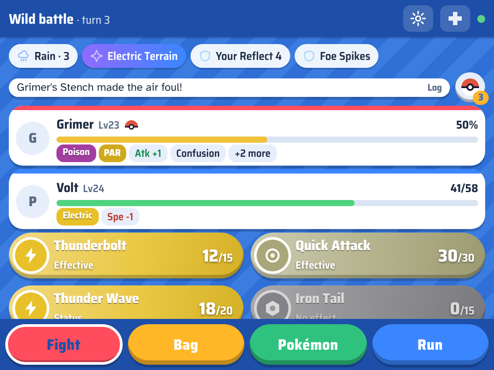
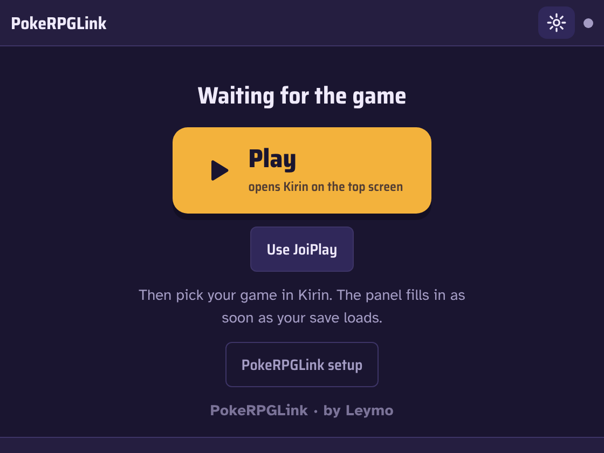

A touch panel for the AYN Thor's bottom screen that plugs into Pokémon fangames running on the top one: battle menus, your party, the bag, the map and the Pokédex, all one tap away — without ever stealing the controller from the game.
The Thor has two screens, and RPG Maker fangames only use one. PokeRPGLink turns the second one into the DS-style touch screen these games never had. A small mod inside the game reports what's happening; the Android app draws it on the bottom screen and sends your taps back as commands. The panel's window can't take focus, so the top screen keeps the controller the whole time.


A Ruby mod hooks the game's battle and map scenes and writes the game state to a small JSON file several times a second. The Android app (Java) shows a WebView UI in a non-focusable overlay on the second display and writes one file per tap, which the mod turns into the game's own menu inputs. Adapters cover the different engine families, and every hook fails on its own, so a game update turns off one feature instead of breaking the game.